Ingredients
주 재료
- 물180~200g
- 소금1g
- 박력분100g
- 설탕5T
- 버터30g
- 올리고당30g
- 달걀1개
- 시나몬가루1t
Steps
- 올리고당, 버터, 소금, 물을 냄비에 담고 중불로 버터가 녹고 팔팔 끓을 때 까지 끓여주세요~
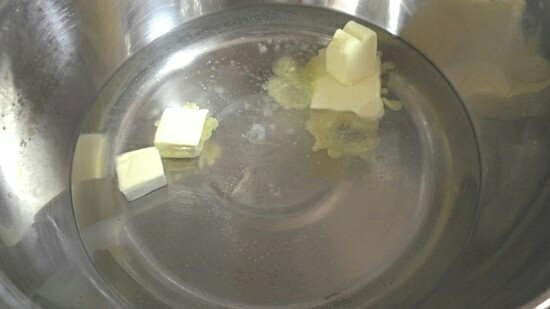
- 버터가 녹으면 불에서 내린 후, 체친 중력분을 넣고 잘 섞어 주세요.
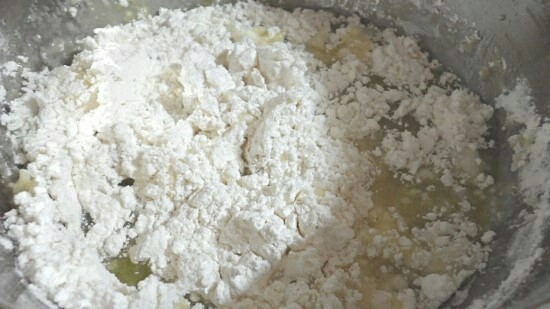
- 박력분을 섞은 반죽은 다시 중불에 올려 1분간 빠르게 섞어가며 골고루 볶아줍니다.
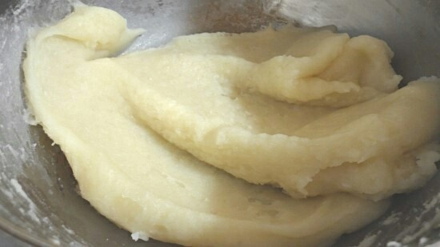
- 1분간 중불에서 호화시킨 반죽은 스텐볼로 옮기고 얇게 펴서 반죽을 식힙니다.
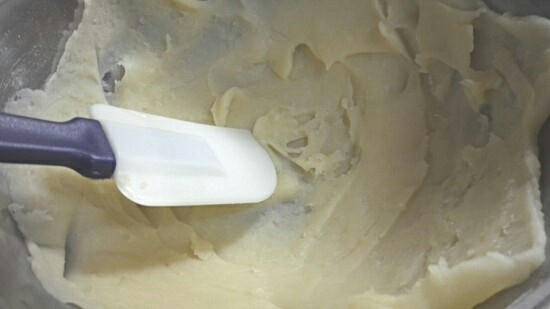
- 이제 계란을 넣어 주는데요! 계란은 미리 풀어서 준비한 다음, 조금씩 넣어가며 반죽해요.
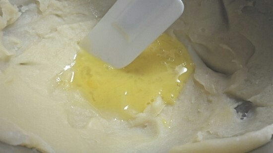
- 반죽이 꽤나 되직해야 합니다! 묽으면 괜히 튀길 때 힘들어요~~ 위 사진처럼 반죽이 흐르지 않고, 주걱이 지나간 자국이 선명히 남을 정도! 눈치채셨을라나 모르겠네요. ㅎㅎ 슈 반죽이랑 똑같은 방식인 익반죽법이에요
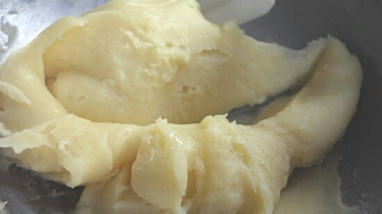
- 완성된 반죽은 별모양 깍지를 끼운 짤주머니에 넣은 후 원하는 모양으로 짜 주시는데요, 저처럼 저렇게 크기 맞춰 자른 유산지 위에 짜면 모양도 예쁘고 튀기기 편해요.
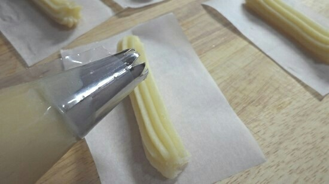
- 리본모양도 짜줬다능 ㅇㅅㅇ 데헷!
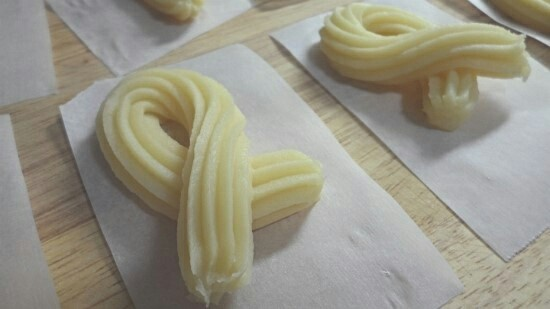
- 추로스를 말릴 동안 튀김기름을 준비 해요. 튀김용 팬에 기름을 넉넉히 넣고(추로스가 반 이상 잠길 높이) 센불로 170~180도까지 예열합니다.
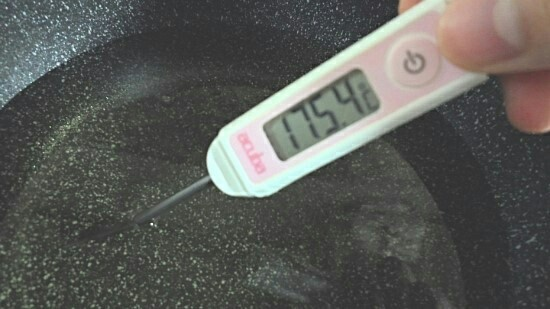
- 달궈진 기름에 추러스 투하! 계속 뒤집어가면서 모든 면이 노릇하게 튀겨주세요~
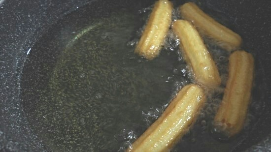
- 기름 온도는 불조절 해가며 계속 170~180도로 유지 해 주셔야 하고요.
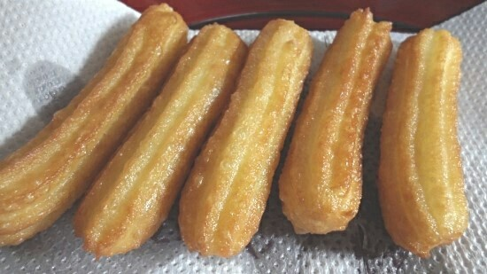
- 리본도 노릇노릇 잘 구워졌어요 > 0
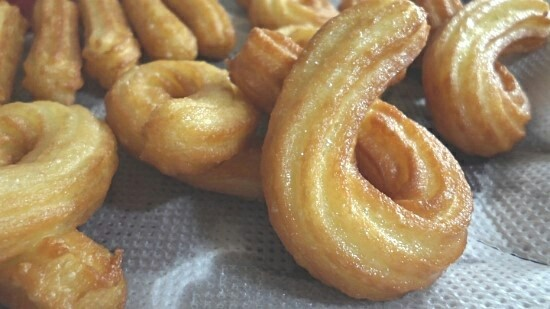
- 거기서 끝내도 되지만 저는 좀 더 바삭하게 먹고 싶어서 190도의 기름에 한 번 더 튀겼어요. 아잇ㅎㅎㅎ 색도 넘나 예쁜것♥
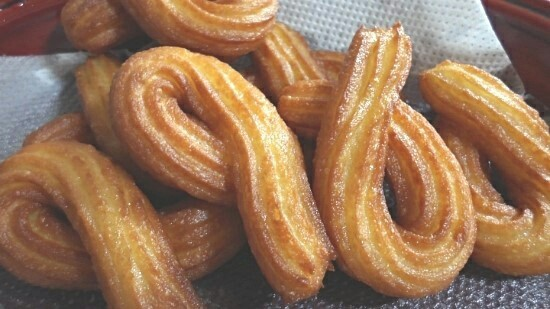
- 그렇게 튀겨진 추로스는 한 김 충분히 식혔다가 비닐봉지에 설탕, 시나몬가루를 넣고 추로스도 넣고! 잘 흔들어서 설탕 옷을 입혀줍니다. 추로스가 뜨거울 때 설탕옷을 입히면 설탕이 녹아서 덕지덕지 보기 흉해요~
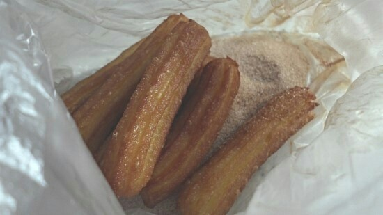
- ㅋㅋㅋㅋㅋ네 사실 하트모양도 있었습니다ㅋㅋㅋ 꺄륵 귀엽죠?
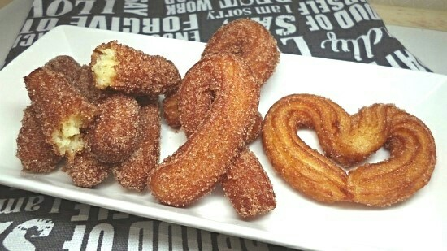